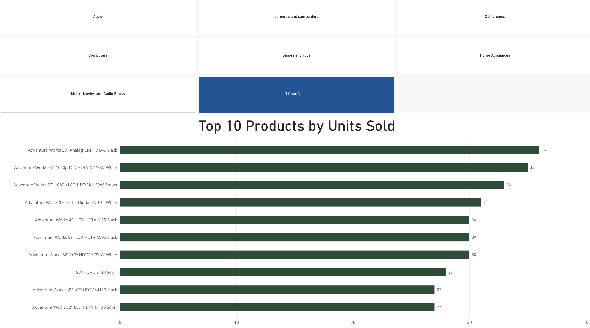

Power BI Sales Data Analysis - Ashton Hatch
What are our top selling products by volume per category?

This chart shows the ten products that sold the most units. The category slicer allows different product categories to be selected to see which products sell the most in each category.
In the TV and Video category, the Adventure Works 20-inch Analog CRT TV E45 Black sold the most units with 36 sales. Other televisions were also among the top selling products in this category.
This chart helps show which individual products are most popular based on the number of units sold rather than total revenue.
This recording shows how the category slicer changes the chart when different product categories are selected.
Using the slicer makes it easier to compare the top selling products within each category without creating a separate chart for every category.
Previous Page Next Page